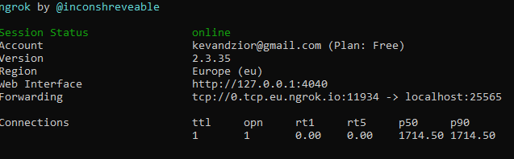

- Wynajmujesz serwer na stronie hostingowej (np. CraftServer, Enderchest, TitanAxe)
- Tworzysz serwer na swoim komputerze
- Tworzysz serwer w sieci LAN
Wynajęcie serwera
Pójde prosto z mostu, bo nie chce mi się rozpisywać.Na początku musisz sobie znaleźć hosting (strona na której bedzie stał twój serwer). W swoim nędznym życiu używałem już pare takich, ale na razie moge polecić hosting o nazwie TitanAxe.com Działa dobrze, support szybki więc jest git. Tam Pierwsze co zrobisz po założeniu konta musisz je doładować, bo jednak trzeba za coś opłacać ten serwer, jest kilka opcji : przelew, paypal, sms, ale z tym to już sobie chyba każdy poradzi. Potem musimy stworzyć nasz serwer. W panelu zarządania klikamy Dodaj Serwer. Tam klikamy opcje Minecraft, a następnie wybieramy typ serwera. Tutaj już troszke z górki. Spróbuje omówić każdy z nich.
- BungeeCord, HexaCord - silniki do tworzenia kilku serwerów w jednym, raczej dla dużych przedsiębwzieć
- CraftBukkit, Spigot, PaperSpigot, Travertine, Waterfall - wszystko PRAWIE to samo, chodzi tutaj o możliwość używania tzw. pluginów (dodatków do serwera w stylu komend /home czy innych)
- Forge - silnik do stworzenia serwera na modach
- Oryginalny - nasz normalny, oryginalny poczciwy minecraft, bez żadnych dodatków
- Zarządzanie - Tutaj możemy uruchomić serwer, zobaczyć wykorzystywane zasoby, uzyskać informacje o parametrach serwera, stronie, bazie danych itp. dla nas najważniejsza będzie opcja uruchomienia serwera oraz jego adres ip, dzięki któremu bedziemy mogli się do niego połączyć. (to jest ten pierwszy w polu parametry serwera, w linjice adresy :)).
-
Konfiguracja - tutaj opisze każdą opcje po koleji.
- Message of the Day (motd) - To co wyświetla sie pod nazwą serwera w Minecraft
- Liczba graczy - wiadomo
- Dystans - jest to odległość z jaką będzie generował się świat w odległość od gracza podany w chunkach czyli 16x16 bloków (chyba dobrze to powiedziałem). Dla niskiego ramu, niski dystans
- Paczka zasobów - tzw. texture pack lub resource pack czyli paczka jaką ma proponować serwer przy wejsciu na niego
- SHA1 - tzw. specjalny klucz naszego texture pack'a (nie bede tu opisywał po co to)
- Tryb premium - jeżeli macie kupionego minecraft'a - zaznacz, jeżeli nie - odznacz
- Serwer publiczny - wiadomo
- Biała lista - inaczej lista osób które mają zezwolenie na wejście na serwer -> nie potrzebne jeżeli nie udostępniacie ip serwera publicznie.
- Poziom uprawnien OPa - Jaką moc ma tzw. Admin, lepiej nie tykać jeżeli nie bedzie to zaawansowany serwer
- Poziom trudności - wiadomo
- Tryb gry - wiadomo
- Wymuś tryb gry - wiadomo
- Włącz command block - pozwala na korzystanie z bloków poleceń
- PvP - można się bić z innymi graczami
- Tryb hardcore - raz umrzesz, i już nie możesz grać na serwerze
- Włącz latanie - pozwala na latanie jeżeli nie jest się na trybie Kreatywnym -> Pozwala w jakimś stopniu zlikwidować cheaterów (chociaż często sie buguje jeżeli na serwerze są lagi)
- Włącz nether - można wyłączyć możliwość przejścia do netheru
- Ogłaszaj osiągnięcia graczy - wyświetla osiągnięcia na chatcie
- Zdalny dostęp do serwera - nie omawiamy :/
- Nazwa mapy - proste, jeżeli chcemy pograć z kumplem w jakąś mapke parkour z neta, musimy tu wpisać nazwe folderu z nią, który wcześniej wrzuciliśmy do naszego serwera (potem opisze jak)
- Seed - unikalny kod naszego świata, dzięki któremu wygeneruje sie nasz świat (można zostawić puste, wtedy jest losowy)
- Opcje generatora - dodatkowe opcje takie jak czy mają się pojawiać wioski, twierdza czy inne (po wiecej informacji jak sie tym posługiwać -> google)
- Rozmiar świata - rozmiar świata w blokach
- Ochrona spawnu - tyle bloków od orginalnego spawnu nie mogą budować ani niszczyć osoby bez OPa (nie bedące adminem)
- Wysokośc budowania - wiadomo (max. 265)
- Typ mapy - wiadomo Reszta opcji raczej wiadoma (NIE ZAPOMINAĆ ZAPISAĆ ZMIAN (ZIELONY PRZYCISK NA GÓRZE))
- Administracja - tutaj wpisujesz nick gracza, klikasz enter i możesz mu zrobić różne rzeczy :)
- Manager plików - tutaj można edytować pliki serwera. Jeżeli chcemy dodać własny świat - TO WŁAŚNIE TU, ale niestety można to zrobić tylko przez klient FTP (np. FileZilla) (Potem opisze co i jak z tym)
- Konsola & logi - Tutaj mamy całą konsole serwera, wszystkie informacje na bierząco, chat, oraz możliwośc wpisywania komend Reszta opcji serwera jest już raczej zbędna (dla nas :)).
Na własnym komputerze
Tutaj pokaże jak zrobić czysty serwer minecraft na własnym komputerze. Pierwsze co potrzebujemy to konto na stronie ngrok.com Po założeniu konta, powinniśmy wylądować w naszy dashbordzie, lub po ludzku profilu. Stąd klikamy download for Windows i zapisujemy gdzie nam wygodnie. Następnie wypakowujemy plik (Jeżeli masz WinRara bądz podobne to klikasz Wypakuj Tutaj lub Extract Here, jeżeli nie klikasz prawy i wyodrębnij wszytkie) Tam mamy plik ngrok lub ngrok.exe, ale to nie ważne. Klikamy shift+prawy w folderze gdzie znajduje się ten plik i klikamy "Otwórz tutaj okno programu PowerShell" lub coś podobnego. Wyskoczy nam konsola. Wróć na strone ngrok.com i tam masz drugi punkt pod tytułem Connect your account. Kopiujesz całą linike z ./ngrok authtoken jakiśtamkod i wklejasz do tej konsoli aka PowerShella i klikasz Enter. Jeżeli wszystkio dobrze poszło możesz już wyłączyć tą konsole. Teraz już tylko pobierasz ten plik i zapisujesz go w folderze gdzie znajduje się plik ngrok. Jest to skrypt który automatycznie włączy ngrok z odpowiednią konfiguracją. Po odpaleniu Start lub Start.bat(jeżeli masz włączone rozserzenia plików) pokaże ci sie takie okno
W miejsciu gdzię pisze Forwarding masz taki ala link. To bedzię IP twojego serwera (bez tego tcp://, czyli jeżeli chcesz komuś wysłać to ip wysyłasz przykładowo 0.tcp.eu.ngrok.io:11934) Za każdym razem teraz jak chcesz odpalić serwer MC, włączasz plik Start a następnie kopiujesz to IP, gdyż za każdym odpaleniem będzie ono inne!!.
Stąd już prosta droga do stworzenia serwera. wchodzisz na strone mcversions.net i szukasz odpowiedniej dla ciebie wersji. Klikasz przy niej Download a następnie Download Server Jar. Zapisz ten plik w stworzonym przez siebie folderze specjalnie pod ten serwer. Odpalasz plik, po chwili jak wyszkoczy coś o EULA wyłączasz go, w folderze szukasz pliku eula i zmieniasz w nim eula=false na eula=true. Odpalasz plik jeszcze raz. Czekasz aż serwer ci się załaduje (Będzie pisało coś w stylu "Done, for help..."), po załadowaniu wyłączasz serwer i szukasz pliku server.properties (lub po prostu server) klikasz na nim prawy i otwórz za pomocą notatnik. w nim najważniejsze opcje to.
- difficulty - tutaj w zależności od wersji wpisujesz albo tekstowo albo liczbowo 0-peaceful, 1-normal, 2-hard
- gamemode - tryb gry, tak samo liczbowo albo tekstowo 0-survival, 1-creative, 2-adventure
- max-players - maksymalna liczba graczy
- motd - opis jaki się pojawia pod serwerem kiedy dodasz go do listy
- online-mode - jeżeli grasz na non-premium tj. nie masz kupionej gry, wpisz false, jeżeli wszyscy gracze mają kupioną, true